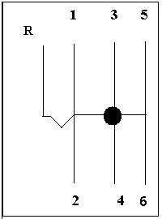

CUANDO Y COMO METER LAS MARCHAS.
El Punto Negro es el Punto de Reposo, que es donde se queda la Palanca cuando la soltamos en el Punto Muerto.

A 0 Km. METEMOS 1ª
Impulso 2 segundos 2ª (20 Km.)
Aceleramos entre 30 y 40 Km. 3ª
Aceleramos entre 50 y 60 Km. 4ª
Aceleramos entre 70 y 80 Km. 5ª
Y a más de 80 km. 6ª
REDUCIENDO
Frenando por debajo de 70 Km. 4ª
Frenando por debajo de 50 Km. 3ª
Frenando por debajo de 30 Km. 2ª
Cuando paramos 1ª
IMPORTANTE- Siempre que nos detengamos, pondremos Punto Muerto o meteremos la 1ª
TENEMOS QUE SABER IDENTIFICAR TODOS ESTOS MANDOS DEL VEHICULO
El desconocimientode alguno de ellos supone un suspenso en el examen
practico. Como no siempre se dan las circunstancias para su uso en
clase, debemos repasarlos mentalmente o en el vehículo parado.
Mandos:
Luz, corto, carretera , niebla y destellos
Limpia delantero y trasero, lavaparabrisas y luneta termica.
Difusor de aire al parabrisas.
Ventilador calefación.
Regulador de altura de las luces en función de la carga del vehiculo.
Luces testigo de:
Freno de mano, Luz de largo alcance, Luz de emergencia, Luz de niebla
Indicadores de:
Temperatura motor
Cuentakilometros
Cuentarevolucines
Desbloqueo Volante
Ademas antes de empezar el examen nos haran alguna pregunta sobre:Comprobaciones previas. "En este caso el desconocimiento de estas preguntas se calificara como falta leve.
¡Arrancamos!
1º Pisar el pedal del embrague a fondo con el pie izquierdo.
2º Llevar la palanca de cambios a la posición de primera velocidad.
3º Conjugar el pie izquierdo, soltado lentamente el embrague, y el pie derecho acelerando suavemente, hasta notar un ligero cambio en el ruido del motor.
En este momento debe detener el movimiento de los pies, inmovilizando los pedales de embregue y acelerador en esa posición.
Pie derecho ROMPEMOS LA ACELERACIÓN +- 1100 VUELTAS
PIE IZQUIERDO ENMBRAGUE AL PUNTO DE FRICCIÓN
QUIETOS LOS PIES HASTA ANDAR 2 METROS O
ALCANZAR LOS 10 KM/H.
A RECORDAR PRIMERO SE ACELERA Y LUEGO SE SUELTA EL EMBRAGUE HASTA EL PUNTO DE FRICCIÓN O MEDIO EMBRAGUE.